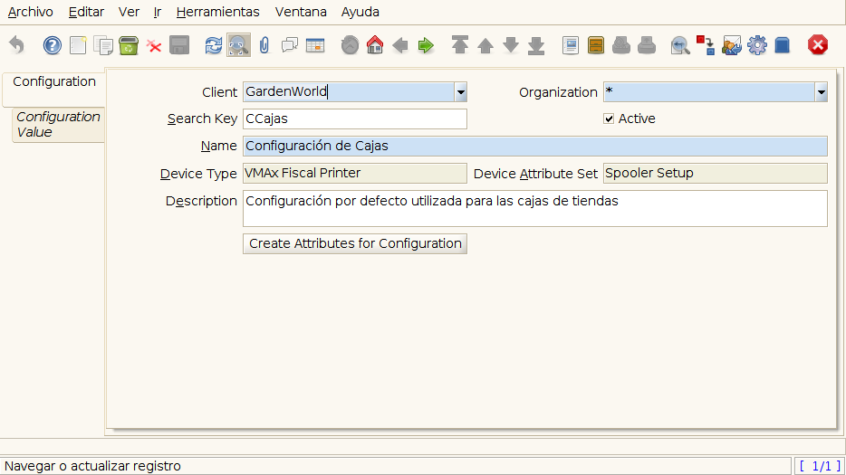

Configuración de Impresora Fiscal VMax 220 para Usar con ADempiere¶
Requisitos previos:
Tener un equipo con Windows instalado, bajo la Arquitectura procesador de 32 bits.
Adaptador USB-Serial Compatible con Windows en la versión del sistema operativo usado (Conector DB9 a USB).
Instalar la Aplicación Spooler.
Es necesario ingresar a ADempiere desde la versión de escritorio, para un correcto funcionamiento es necesario modificar el archivo “RUN_Adempiere.bat” actualizando los parámetros:
-
"Configuración del Classpath" - Parameters
ADEMPIERE_HOME – (Ruta de ADempiere).
JAVA_HOME – (Ruta de Instalación de JAVA).
Note
Es recomendable colocar un acceso directo en el escritorio, para ejecutar con mayor Facilidad ADempiere.
Configurar la impresora requiere los siguientes pasos:¶
Ingresar a ADempiere con el Rol asignado correspondiente.

Imagen 1. Inicio de Sesión¶
Posicionarse en el menú de ADempiere.
Ingresar al directorio Administración de Sistema / ReglasGenerales / Configuración de Dispositivo.

Imagen 2. Menú Fiscal¶
Abrir la Ventana Configuración de Dispositivo.
Imagen 3. Configuración de Dispositivo¶
Crear un Nuevo Registro
Agregando los siguientes Valores en sus correspondientes campos:
Campo
Valor
Clave de Búsqueda
Código asignado a la configuración’
Nombre
Nombre de Configuración
Tipo de Dispositivo
VMAx (Impresora Fiscal)
Conjunto de Atributos de Dispositivo
Configuración de Spooler
Descripción
Una breve descripción del dispositivo y su uso
Luego de Cargar los Valores es Necesario Presionar el Botón crear Atributos para configuración.
Se desplegara una ventana donde se debe seleccionar el directorio de instalación de la Aplicación Spooler y el Ejecutable de las misma.
"Ejemplo de Configuración"
- Parameters
Folder (Spooler) – C:Program FilesSpoolerVmax.
App (Spooler) – epsSpoolerVmax.exe.

Imagen 4. Diálogo de Configuracion de Dispositivo¶
Crear el nuevo Dispositivo (impresora):¶
Abrir la Ventana Dispositivo ubicada en el menú Administración de Sistema / Reglas Generales / Configuración de Dispositivo.
Crear un Nuevo Registro Agregando los siguientes Valores en sus correspondientes campos:
Campo
Valor
Clave de Búsqueda
Clave de búsqueda para Impresora’ (Este Valor corresponde al Serial de la impresora)
Tipo de Dispositivo
VMAx (Impresora Fiscal)
Nombre
Nombre de la Impresora
Descripción
Descripción

Imagen 5. Dispositivo¶
Configuración de uso de Dispositivo:¶
Luego de los pasos anteriores es necesario acceder a la Pestaña Configuración de uso de Dispositivo, en esta ventana se establece la manera en la que ADempire se comunicara con el dispositivo creado.
crear un nuevo registro:
Campo
Valor
Dispositivo
VMAx (Impresora Fiscal)
Tipo de Configuración
Connection
Configuración de Dispositivo
Configuración de Cajas
Descripción
Breve descripción de la funcionalidad

Imagen 6. Configuración de uso Dispositivo¶
Note
Para confirmar que la configuración de todo lo anterior esta correcta, ingresar de nuevo a ADempiere, en la ventana de seleccion de rol seleccionar la impresora fiscal creada y continuar, dentro de ADempiere procedemos a ejecutar el proceso: Imprimir Reporte Fiscal.